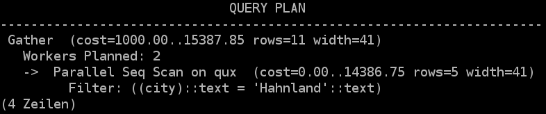
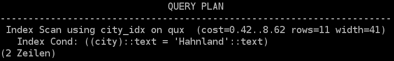
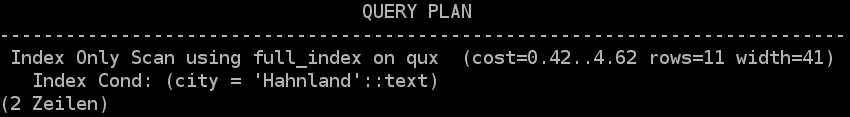
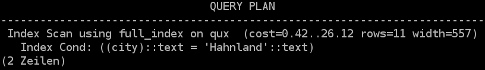
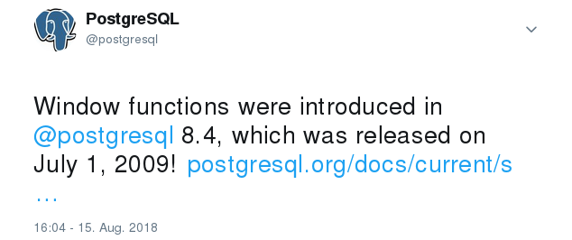

$entity = new Foo('value');
$entityManager->persist($entity);
$entityManager->flush(); // <-- There's SQL somewhere in there
$entity = $entityManager
->find(Foo::class, 42); // <-- There's SQL somewhere in there
$entity->setValue('new value');
$entityManager->flush(); // <-- There's SQL somewhere in there
JPA (Java Persistence API) + Hibernate ORM
Person person = new Person("John", "Doe");
entityManager.persist(person);
entityManager.flush();
Managed entities
$entityManager->find(Foo::class, 42);
$entityManager->getRepository(Foo::class)
->find(42);
$entityManager->createQuery('SELECT e FROM Foo e WHERE e.id = 42')
->getSingleResult();
Which language?
$de = new Language('de');
$en = new Language('en');
$it = new Language('it');
$entityManager->persist($de);
$entityManager->persist($en);
$entityManager->persist($it);
$movie = new Movie('The Mutex');
$movie->setLanguages([$de, $en, $it]);
$entityManager->persist($movie);
$entityManager->flush();
$movie = $entityManager->createQuery(
"SELECT m, l FROM Movie m
JOIN m.languages l
WHERE l.iso6391 = 'it' AND f.name = 'The Mutex'"
)
->getResult();
$movie[0]->getLanguages();
All languages
de
en
it
Clear EntityManager/Unit Of Work
$entityManager->persist($movie);
$entityManager->flush();
$entityManager->clear(); // <-- Clear enities from the EntityManager/Unit Of Work
$movie = $entityManager->createQuery(
"SELECT m, l FROM Movie m
JOIN m.languages l
WHERE l.iso6391 = 'it' AND f.name = 'The Mutex'"
)
->getResult();
$movie[0]->getLanguages();
The Entity Reloaded
$entityManager->reload($entity);
entityManager.reload(entity);
Lazy Loading
Foo foo = myentity.getFoo().getBar().getBaz();
Lazy Loading
$foos = $entityManager->getRepository(Foo::class)
->findAll(); // <-- There's SQL somewhere in there
foreach ($foos as $foo) {
foreach ($foo->getBars() as $bar) { // <-- There's SQL somewhere in there
// do stuff
}
}
Lazy Loading - SQL
-- findAll() returns 3 Foo entities
SELECT t0.id AS id_1, t0.name AS name_2 FROM foo t0
-- Each query is one iteration for getting the Bar relations
SELECT t0.id AS id_1, t0.name AS name_2, t0.foo_id AS foo_id_3 FROM bar t0 WHERE t0.foo_id = 1
SELECT t0.id AS id_1, t0.name AS name_2, t0.foo_id AS foo_id_3 FROM bar t0 WHERE t0.foo_id = 2
SELECT t0.id AS id_1, t0.name AS name_2, t0.foo_id AS foo_id_3 FROM bar t0 WHERE t0.foo_id = 3
Eager Loading
$foos = $entityManager->getRepository(Foo::class)
->findAll(); // <-- There's SQL somewhere in there
foreach ($foos as $foo) {
foreach ($foo->getBars() as $bar) {
// do stuff
}
}
EAGER Loading - SQL
-- findAll() returns 3 Foo entities and joins the bar relation
SELECT t0.id AS id_1, t0.name AS name_2, t3.id AS id_4, t3.name AS name_5, t3.foo_id AS foo_id_6
FROM foo t0
LEFT JOIN bar t3 ON t3.foo_id = t0.id
Know how queries look like
Same code, different SQL
SELECT t0.id AS id_1, t0.name AS name_2 FROM foo t0
SELECT t0.id AS id_1, t0.name AS name_2, t0.foo_id AS foo_id_3 FROM bar t0 WHERE t0.foo_id = 1
SELECT t0.id AS id_1, t0.name AS name_2, t0.foo_id AS foo_id_3 FROM bar t0 WHERE t0.foo_id = 2
SELECT t0.id AS id_1, t0.name AS name_2, t0.foo_id AS foo_id_3 FROM bar t0 WHERE t0.foo_id = 3
SELECT t0.id AS id_1, t0.name AS name_2, t3.id AS id_4, t3.name AS name_5, t3.foo_id AS foo_id_6
FROM foo t0
LEFT JOIN bar t3 ON t3.foo_id = t0.id
Query languages
SELECT a.firstname, a.name FROM AddressBook AS a GROUP BY a.name
Explicit join - One query
FROM Foo AS f JOIN f.bars
Update query
db.First(&person)
// person fetched with name Jane Doe
person.firstname = "John"
db.Save(&person)
UPDATE person SET firstname = 'John', lastname = 'Doe' WHERE id = 1;
Update query
db.First(&person)
// person fetched with name Jane Doe
db.Model(&person).Updates(Person{firstname: "John"})
UPDATE person SET firstname = 'John' WHERE id = 1;
Filter
SELECT f FROM Entity\Foo f
SELECT f0_.id AS id_0, f0_.name AS name_1 FROM foo f0_
WHERE (f0_.deleted = 0);
Why should I care about the SQL parts?
FROM Qux AS q WHERE q.city = 'Hahnland'
Full table scan

Index scan

select * from qux WHERE city = 'Hahnland';
Before

Next release

You can't ignore indices
Slow SQL queries
Need more resources
May lock rows / Waiting queries
An ORM query language doesn't replace SQL!
Query builder (C# SqlKata)
var queryBuilder = new Query("foo as f").Where("f.id", 1)
.Select("f.name", "f.id", "b.name as bname", "q.stuff")
.LeftJoin("bar as b", "b.foo_id", "f.id")
.OrWhere("f.id", 2)
.LeftJoin("qux as q", "q.foo_id", "f.id"); // join order?
if (yolo) {
queryBuilder.WhereTrue("q.moreStuff");
}
How expensive is this query builder SQL?
Back to SQL
SELECT name, department, revenue FROM company;
Window Function
SELECT name, department,
SUM(revenue) OVER (PARTITION BY department ORDER BY name)
FROM company;
name
department
SUM
Albert
sales
1200
Zoe
sales
1200
Angela
development
1804
It's that new MySQL 8 feature
It's a SQL 2003 standard

Values List
VALUES ('value1', 42, 1.8), ('value2', 12, 9);
Values List in DB Versions
PostgreSQL: Yes - 8.2 (and earlier)
MariaDB: Yes - 10.3
MySQL: 8.0.19 (But with ROW syntax)
SQL-92
Partially implemented
INSERT INTO foo VALUES ('value1', 42, 1.8), ('value2', 12, 9);
Column name alias
SELECT * FROM (
VALUES ('value1', 42), ('value2', 12)
) AS t (my_text, my_number);
my_text
my_number
value1
42
value2
12
Column aliases are not supported by MariaDB 10.3
JSON
MySQL/MariaDB
SELECT JSON_OBJECT('a', name, 'b', number) AS jayson FROM foo;
PostgreSQL
SELECT JSON_BUILD_OBJECT('a', name, 'b', number) AS jayson FROM foo;
jayson
{"a": "value1", "b": 42}
Common Table Expression (CTE)
WITH bar (col1, col2) AS (SELECT id, content FROM foo)
SELECT * FROM bar;
id
parent_id
name
1
NULL
A
2
NULL
B
3
NULL
C
4
2
B-1
5
1
A-1
6
2
B-2
7
1
A-2
8
5
A-1-1
9
5
A-1-2
10
8
A-1-1-1
With Recursive
WITH RECURSIVE cat AS (
SELECT * from category WHERE name = 'A'
UNION ALL
SELECT cat_recursive.* from category as cat_recursive
JOIN cat AS parent ON parent.id = cat_recursive.parent_id
)
SELECT * FROM cat;
With Recursive
id
parent_id
name
1
NULL
A
5
1
A-1
7
1
A-2
8
5
A-1-1
9
5
A-1-2
10
8
A-1-1-1
listagg
SQL 2016 (and Oracle)
SELECT LISTAGG(name, ',') AS comma_separated FROM foo GROUP BY number;
PostgreSQL / MSSQL
SELECT STRING_AGG(name, ',') AS comma_separated FROM foo GROUP BY number;
MariaDB / MySQL
SELECT GROUP_CONCAT(name SEPARATOR ',') AS comma_separated FROM foo GROUP BY number;
comma_separated
Sebastian,Andreas
You may not have the full power of SQL at your fingertips